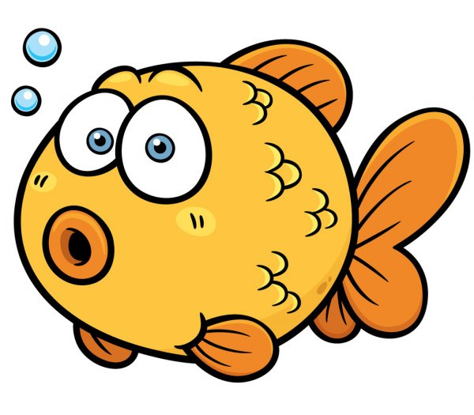

THERE YOU ARE :)
LET'S MAKE A REFLECTION ON...
- Duration:
- 10:00
- PERSONAL REFLECTION
- 1
Now that you've learned how to make reported speech, make a list of the things you had troubles with during practicing. From the most to the least difficult. Then write at least 5 tips to understand better this topic.

It would be great if you could practice reporting some things you have heard recently. Example:
Direct speech Reported speech
Eliah: "I didn't come to school yesterday because I was sick." Eliah said he hadn't come to school the day before because he was sick.
Ask the your tecaher for help, if you need it.
Licensed under the Creative Commons Attribution Share Alike License 4.0